Ideas Planteadas
Resultado de la primera ideación.
Idea#1
Juego de mesa tipo parchís donde se deba lanzar dados para avanzar por un laberinto o camino lleno de trampas y bonus por cada casilla. Cada casilla va a tener personajes representativos que son peligrosos para los animales, en este punto podemos jugar con los escenarios, nuestro personaje principal puede ser un perro que fue abandonado y desea sobrevivir o llegar a un albergue donde puede ser rescatado. En el camino se va a presentar trampas o penitencias, como regresar casillas, regresar al inicio, restar puntos de vida o que sea atrapado por personas malas, es un juego que puede ser de uno hasta 4 jugadores.
Idea#2
Juego de mesa con cartas personalizadas que tengas, un tipo de animal con características, habilidades y puntuación, este juego es para dos o más personas, la mecánica es tomar un mazo de cartas armado aleatoriamente e ir lanzando cartas para debilitar al contrincante, con cada lanzamiento de cartas el jugador tendrá la postura de atacar o defenderse (según sea la habilidad del animal).
Idea#3
Juego de completar palabras, la mecánica se basa en armar equipos de 2 hasta 4 personas y competir entre ellos para lograr descifrar un mensaje, existe una persona que toma el papel de malo que quiere a toda costa eliminar a todos los animales del mundo, y estos equipos toman el rol de guardianes de estos animales. El malo presentará frases o palabras a completar por rondas y por turnos cada equipo tendrá que adivinar letras de esta palabra para seguir, si se equivoca pierde turno y te toca al otro grupo. Gana el equipo que logre adivinar la frase primero. Y pierden todos los equipos si se termina el número de intentos para lograr adivinar la frase o palabra.
Idea#4
Juego en equipos donde hay un conjunto de cartas con acertijos, adivinanzas o penitencias que los equipos deben sacar por turnos. En cada turno el equipo saca una carta del mazo y debe responder o hacer lo que la carta indique.
Idea#5
Juego de memoria que consiste en tener cartas con pares de imágenes de animales con sus nombres y características. El juego se basa en poner sobre una mesa las cartas ocultando la información, y por cada turno el jugador va a tener que escoger dos cartas al azar y se voltea mostrando el contenido, si ambas son iguales gana puntos y las cartas quedan en esa posición, si no son iguales, luego de 3 segundos se voltean las cartas ocultándolas de nuevo y así repetitivamente por cada turno.
Idea#6
Juego de adivinanza en donde por turnos se escogerá una carta que representa un animal con datos curiosos acerca del mismo, luego el jugador procederá a decir dichas pistas y la primera persona que adivine ganará la ronda. Cada adivinanza tendrá ciertos puntos de acuerdo al nivel de dificultad.
Idea#7
Juego donde los participantes sacarán de una caja un número del 2 al 12. Posterior a esto, se deberá lanzar dos dados simultáneamente e intentar que la suma de los dos números sea igual al número escogido, para esto contarán con tres oportunidades por turno. Si el jugador consigue obtener el número podrá sacar de una jaula a un animal. El ganador se decidirá según el número de fichas que posean al final de 10 rondas.
Idea#8
Juego inspirado en un bingo, donde cada jugador contará con una cartilla con 20 casillas que representan a animales domésticos, salvajes, etc. Por otra parte, una persona encargada sacará de una caja el nombre de un animal y una trivia relacionada al mismo. Si los jugadores contienen en su cartilla el animal seleccionado se le añadirá un punto a su puntaje y si desean puntos extras podrán responder la trivia.
Idea#9
Juego donde se les mostrará a los participantes 6 imágenes de animales con diminutas diferencias, luego de 10 segundos se procederán voltear las cartas y el moderador las mezclará. Hecho esto, cada persona en 15 segundos tiene que decidir en qué lugar podría estar la carta con x característica.
Idea#10
Juego de mesa de 3 a 5 personas con varias escenas de crimen en el que se reparten roles, el detective debe hacer preguntas de la situación a los demás para resolver el crimen planteado, con diferentes tarjetas se responden las preguntas y los integrantes pueden dramatizar la escena.
Ideas Planteadas
Tuvimos una primera etapa de ideación un poco pobre, por lo que decidimos generar mas ideas
Resultado de la segunda ideación.
Idea#11
Juego de mesa en el que debes representar una frase con emojis, las demás personas deben intentar adivinar la frase. El juego cuenta con una pila de cartas que contienen diferentes frases y con emojis de ayuda para poder dramatizar la frase.
Idea#12
Juego de mesa en el que debes recorrer un tablero estilo monopolio, tienes una ciudad y eres un candidato a alcalde, cuentas con dinero inicial y tu objetivo es manipular, sobornar y ganar influencias sobre las personas de poder de la ciudad.
Idea#13
Juego de mesa de 2 personas en el que debes presionar botones más rápido que tu rival para ganarle. El juego tiene 2 manos de plástico haciendo la pose de vencidas, en lugar de usar tu mano, debes presionar lo más rápido posible durante 20 segundos para poder hacer que la mano de plástico de tu rival ceda y ganar.
Idea#14
Juego de mesa en el que debes armar un carro a escala, las partes del motor son basadas en las reales a escala, tienes diferentes combinaciones y el que arme el vehículo en menos tiempo posible gana. Es un juego para dos personas.
Idea#15
Juego de cuatro personas que deben escapar de un zoológico y cada uno de ellos estará representado por un animal. El juego comienza colocando las fichas en el centro del tablero y luego empleando turnos, el participante escogerá una carta de tipo de movimiento (La cual puede ser arriba, abajo, derecha o izquierda) y posterior a esto el número de pasos que puede dar. Gana la primera persona que llegue a una de las cuatro esquinas.
Idea#16
Juego de tablero de dos o más personas, en el cual los jugadores deberán cumplir las diferentes misiones presentadas en unas tarjetas. Por cada misión realizada de forma exitosa, la pieza que representa a la mascota podrá avanzar según los puntos ganados, si luego del tiempo establecido la misma no ha llegado la mascota caerá en las manos de un maltratador/cazador.
Idea#17
Un juego en el que se tiene un mazo de cartas, en cada carta se describe una situación relacionada al cuidado animal. El resto de los jugadores hacen el papel de jurado y escriben su respuesta en un papel y los ponen en un contenedor. Se cuentan los votos y el que gane, ese será la respuesta correcta a la situación. Si el que selecciona la respuesta correcta, entonces acumula un punto. En cada ronda cambia el seleccionador de la carta. El que llegue al final del juego con más puntos gana.
Idea#18
Juego de memoria en el que se tienen un mazo de cartas con imágenes de actividades que forman parte del cuidado de una mascota. Para jugarlo, se deben barajar las cartas con el fin de que los jugadores no sepan el orden en el que están y se coloca todas las cartas boca abajo sobre la mesa. Por turnos, cada jugador voltea dos cartas tratando de encontrar las parejas. Si las dos cartas resultan formar una pareja de cartas iguales, el jugador se lleva las cartas, las reserva en su pila y tiene otra oportunidad para voltear dos cartas. En caso de que se equivoque, tiene que devolver las cartas a su estado original y pasa el turno a la persona que le sigue. El jugador no puede llevarse más de dos parejas. Es decir, si acierta dos veces repetidas, automáticamente debe pasar el turno a la siguiente persona. Cuando se acaben las cartas también acaba el juego, quien tenga más cartas apiladas gana.
Idea#19
Juego de mesa que utiliza un tablero con cuadros como las damas, pero en lugar de que se de 8x8, es de 6x6. Es para dos personas. En el juego dos jugadores se deben enfrentar el uno contra el otro haciendo uso de las piezas de animales que se le asignen, los cuales son asignados al jugador aleatoriamente con la ayuda de un dado. El dado de selección de animales consta de 6 caras, cada una tiene la cara de un animal distinto. Al iniciar la partida, se le otorgan tres oportunidades a cada jugador de que tire el dado y estas tres caras de animales que le salgan deben ser sus animales asignados, sin importar si en las tres ocasiones les salga el mismo animal. Al jugador se le da una pareja de animales del mismo tipo dependiendo de lo que haya obtenido al tirar los dados, es decir que ahora tendrá dos animales de cada tipo, lo que hace un grupo de 6 animales. Luego, se deben ubicar los animales en el orden que la persona desee, estratégicamente, en la primera fila del tablero dependiendo del lado que le toco. Luego, para moverse a lo largo de tablero usan una moneda, si sale cara un animal se puede mover 1 paso y si sale sello, se puede mover 2. Los movimientos pueden ser en diagonal o rectos, pero siempre hacia adelante, los movimientos hacia los costados o hacia atrás no están permitidos. En los enfrentamientos, si un animal se encuentra de frente con un animal que está más arriba que él en la cadena trófica, entonces será comido y si un animal se encuentra con otro que está más abajo en la cadena trófica, se lo puede comer. Las “comidas” solo se pueden hacer si los animales están frente a frente, no se puede comer en diagonal. El primero que logre comerse todos los animales del enemigo o que logre que todos sus animales lleguen al otro lado, gana. En caso de que uno de los jugadores logre que sus animales lleguen al otro lado, pero tiene únicamente la mitad (o menos) de sus animales vivos, automáticamente pierde –siempre y cuando su enemigo tenga por lo menos un animal más que él-. El jugador gana si es que llega al otro lado con más de la mitad de sus animales con vida.
Idea#20
Juego multijugador de para máximo 6 personas y mínimo 3, en el que se utiliza una ruleta con 18 espacios en blanco como instrumento para que el juego se lleve a cabo. Cada jugador debe escribir acciones o actividades realizadas por animales, dependiendo de la cantidad de jugadores. Por ejemplo, si existen 6 jugadores activos, entonces cada uno debe escribir 3 acciones. Estas acciones después de ser escritas en secreto por los jugadores deben pegarse en un orden aleatorio en la ruleta, pero con la acción debe estar cubierta para que no se pueda ver en qué consiste la acción o el orden en el que ellas se encuentran. Es un juego en base a turnos, solo el que tenga el turno activo tiene oportunidad de ver la ruleta y girarla, el resto debe estar de espaldas a la ruleta. Una vez que el jugador obtiene una acción, debe imitarla para que sus compañeros traten de adivinar de qué animal se trata y qué acción es la que realiza. Los jugadores tienen 1 minuto y medio para adivinar. Si alguien adivina de lo que se trata durante el tiempo asignado, entonces se lleva un punto. Al final, quien tenga más puntos gana.
Idea#21
Este juego es de memoria. Se basa en que cada jugador debe tener un animal asignado y debe escoger una manera de representarlo. Por ejemplo, el jugador 1 tiene un perro y decide representarlo mediante un ladrido y haciendo como que tiene orejitas con sus manos. El juego se basa en que cada jugador debe realizar la representación del animal que le tocó a sus compañeros antes y luego la de su animal cuando le toque. Por ejemplo, al jugador 1 le toca jugar, como él es el primero únicamente realiza su representación y luego nombra a alguno de los otros jugadores para que se lleve a cabo su turno. Digamos que en este caso mencionó al jugador 5, el cual tiene asignado a un elefante. Entonces ahora el jugador 5 debe realizar la representación que hizo el jugador 1, luego la suya y mencionar a otro jugador para que realice su representación y así sucesivamente. Si algún jugador no empieza su turno dentro del minuto después de que su nombre fue mencionado, es descalificado. Un jugador también puede ser descalificado si algún animal de la secuencia es incorrecto o si olvida agregar el suyo. Cuando un jugador es descalificado, la secuencia se inicializa desde 0. Los dos últimos jugadores que queden activos ganan.
Idea#22
Juego en que compiten cinco jugadores para llegar a una casa en las montañas. Al comienzo se repartirán entre 4 o 5 fichas por jugador que representan animales domésticos y luego se turnarán en escoger desde una baraja, entre las cuales se puede o escoger los movimientos que debe realizar o una carta “trampa”. El jugador que escoja dicha carta activará una trampa establecida aleatoriamente dentro del mapa que puede perjudicar tanto a sus piezas como a la de los otros jugadores.
Idea#23
Juego basado en “werewolf” en donde se debe descubrir a la persona que ha estado robando/maltratando a los animales de un vecindario. El juego comienza con la selección aleatoria de un moderador, los dueños de mascotas, un alborotador y el ladrón/maltratador de animales. Cada dueño contará con dos fichas representando a animales, las cuales podrán ser robadas por el “malo” durante la noche. Cuando el moderador indique se procederá a escuchar las razones por las cuales afirman no ser los maltratadores y posterior a esto se procederá a votar por cual creen quien es el culpable.
Idea#24
Juego basado en “werewolf” en donde se debe descubrir a la persona que ha estado robando/maltratando a los animales de un vecindario. El juego comienza con la selección aleatoria de un moderador, los dueños de mascotas, un alborotador y el ladrón/maltratador de animales. Cada dueño contará con dos fichas representando a animales, las cuales podrán ser robadas por el “malo” durante la noche. Cuando el moderador indique se procederá a escuchar las razones por las cuales afirman no ser los maltratadores y posterior a esto se procederá a votar por cual creen quien es el culpable.
Idea#25
Juego de 4 o más personas inspirado en las trivias donde hay un tablero con diferentes dibujos de animales y hay tarjetas con características o pistas de los animales. Cada jugar tiene una cantidad de fichas de un color que hayan escogido y las pueden ir colocando en cada ronda. En todas las rondas pueden jugar todos los jugadores e intentar adivinar el animal que tiene las características de la tarjeta y cuando estén seguros de su elección deben poner la ficha en el tablero encima del animal seleccionado (pueden poner 1 o más fichas). Si no es el animal correcto las fichas se las reparte entre los jugadores que adivinaron y si es el animal correcto ganan cierta cantidad de puntos. El o los primeros que llegan a una cantidad de puntos especificada gana y también se debe contar las fichas acumuladas (fichas de otros jugadores valen por dos).
Idea#26
Juego inspirado en “secret Hitler” que se puede jugar con 6 o más personas donde se busca encarcelar al líder de una banda de tráfico de animales en peligro de extinción o conseguir que se aprueben leyes que apoyan a los animales por lo que al principio te dan al azar una tarjeta que te dice si eres parte del grupo amante de animales o de la banda de tráfico de animales y no debes revelar tu rol. Cada jugador tiene la carta de su rol, una carta de si y una carta de no. Prohibido mostrar la carta a otro jugador. Como nos damos cuenta pueden ganar o los de la banda de tráfico o los amantes de animales. Para ganar los amantes de animales deben haber aprobado 6 leyes a favor de los animales o haber encarcelado al líder de la banda de tráfico. Para ganar los de la banda de tráfico de animales deben haber aprobado 6 leyes que no favorecen en total a los animales. Los votos son secretos en cada ronda que se ve una de las leyes.
Idea#27
Juego inspirado en “Life” que se puede jugar con 2 o más jugadores y que tiene un tablero y dinero con el que vas a estar haciendo diferentes compras que te permitirán adoptar animales o crear fundaciones. Comienzas como un exitoso empresario que desea ayudar a los animales del mundo y puedes pasar por situaciones que harán que disminuya o aumenten tus fondos dependiendo de la tirada de un dado (al azar) o de cartas que salgan. En este caso no solo se busca llegar al final, sino que tengas más fundaciones que los demás jugadores y que hayas adoptado a más animales que los demás. En el juego podrás encontrarte con situaciones donde podrías verte desventajado por haber tenido más mascotas que los demás o situaciones difíciles que suelen pasar las fundaciones. El juego busca mostrar los pasos que uno puede seguir o las situaciones que uno puede pasar cuando se adentra en el mundo de ayudar a los animales especialmente en el mundo de las fundaciones.
Idea#28
Juego inspirado en “astro knights” que se puede jugar entre 3 o 4 jugadores. Trata sobre unos españoles que quieren conquistar y colonizar unas tierras vírgenes y sus habilitantes no lo permitirán por lo que los jugadores tomarán el papel de los nativos. Cada jugador deberá agarrar una carta en la cual le dirá cual es su personaje y sus estadísticas (vida, mana y slots). Luego para comenzar, deberá tener cada uno 3 cartas de un fajo de bufos o habilidades y solo podrá utilizarlas en su turno y cada una de esas cartas tendrá un costo de mana. Cada jugador obtiene por turno 2 de mana. El enemigo será el capitán de los españoles con 3 soldados cada uno con sus estadísticas. Habrá una ruleta que decidirá de modo al azar de quien es el turno (jugador1, jugador2, jugador3, jugador4, españoles) y si es turno de alguno de los nativos entonces él podrá atacar y usar una de sus cartas. Si es turno de los españoles entonces sus soldados y el capitán podrán atacar y deberá sacar una carta de un fajo de cartas de habilidades solo para los españoles la cual usarán también.
Idea#29
Juego inspirado en “El juego de la vida” que se puede jugar entre 2 a 4 jugadores. Todos los jugadores empiezan lanzando un dado, cada uno debe tomar turnos, el tablero está lleno de obstáculos o grandes aciertos para el jugador. Los obstáculos pueden ir desde perder un turno hasta retroceder posiciones en el tablero. El objetivo del juego es obtener la mayor cantidad de animales en su granja, el jugador con más animales y mayor diversificación de los mismo será el ganador. Al final de la partida el jugador que llegue primero a la meta obtendrá un bonus de puntos.
Idea#30
Juego para amantes del café, ya que, se basa en un mazo de cartas en donde tenemos diversos cafés de todo el mundo con estadísticas (origen, nivel de amargura, arábica o fino, etc). Este juego es en parejas que deben ayudarse mutuamente a sumar la mayor cantidad de concentración sumando los mazos de las parejas, el truco está en que solo la pareja sabe que cartas tiene el jugador. Por tanto, debe tratar de deshacerse de las cartas con menor concentración y quedarse con la carta que tenga la mayor concentración, esto con la ayuda de su pareja. La complejidad existe dado que nadie durante la partida puede hablar, y cada pareja tiene 15 cartas, una persona de la pareja tiene 5 cartas y la otra persona tiene 10 cartas. En cada turno, las parejas tienen un límite de 5 segundos para deshacerse de una carta, si el tiempo termina se les restara 1 segundo en el siguiente turno y si llegan a 0 segundos habrán perdido la partida.
Ideas Seleccionadas
Se tomaron las 3 mejores ideas consideradas por el equipo
Primer idea
- Paws and claws trial/Juicio de patas y garras
Este es un juego multijugador, en el que se utiliza un mazo de cartas que se ubica boca abajo en la mesa. En cada carta se describe una situación que tiene que ver con el cuidado o protección de un animal. El juego funciona como un juicio en el que el acusado (persona que está de turno) se encuentra metido en una situación -que se presenta en la carta- y el jurado (el resto de las personas) deben juzgarlo y definir si la acción que tomó fue la correcta. Se basa en turnos, el acusado toma una carta y lee la pregunta en voz alta. El jurado debe escuchar las propuestas de solución y votar secretamente por alguna de ellas. Antes de que el jurado discuta acerca de cuál será la opción correcta, el acusado escoge una solución, la cual crea que será la más popular entre el resto, y la escribirá en un papel, reservándola para después. Luego, se discute las razones por las cuales una opción sería la correcta y se define la solución correcta, la de mayor cantidad de votos. Si el acusado escogió la opción correcta, le suma puntos por esa respuesta. De lo contrario, no se le suma nada. Cada situación tiene una puntuación diferente, de acuerdo con su dificultad. En cada ronda, la persona que seleccione la carta será diferente, hasta que todas las cartas hayan sido leídas. Al final, la persona que tenga la mayor cantidad de puntos gana.
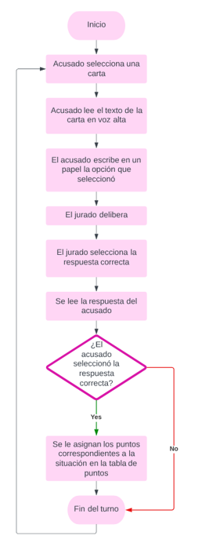
-
¿Cuál es el conflicto en mi juego?
-
Crear consciencia en las personas de que existen diferentes maneras de poder ayudar a los animales.
-
¿Cuáles son las reglas y procedimientos?
-
El juego inicia con la asignación aleatoria de roles los cuales se conforman seleccionando al
acusado y el resto de las personas toman el rol de jurado.
-
¿Qué acciones pueden tomar los jugadores y cuando las toman?
-
El jugador que toma el rol de acusado debe seleccionar una carta aleatoria de un mazo de cartas con
alguna situación o pregunta relacionada al cuidado de animales y, luego, toma una decisión. El resto
de los jugadores que son el jurado, ellos deben llegar a un consenso y seleccionar una respuesta.
Esta mecánica se repite por cada turno y cada jugador va a tomar los dos roles que existen, ya que
el turno va a ir rotando hasta que se acaben las cartas.
-
¿Hay turnos? ¿Cómo funcionan?
-
Existen turnos rotativos por cada vez que se saque una carta del mazo, el turno se cede al jugador
que este siguiente y así se forma de nuevo otro grupo de jueces con el nuevo acusado.
-
¿Cuántos jugadores puede haber?
-
Es un juego multijugador
- ¿Cuánto se demora en resolver el juego?
-
Hay límite de tiempo de máximo 1 minuto para escoger la respuesta y ponerla a votación
- ¿Cuál es el nombre (título) del proyecto? (Proyecto Espada)
-
Paws and claws trial/Juicio de patas y garras
- ¿Cuál es la audiencia del juego?
-
Personas de cualquier edad, de preferencia que tengan algún tipo de interés en relacionarse con
animales o mascotas.
-
Definan los objetivos de cada jugador
- ¿Qué debe hacer un jugador para ganar?
-
Acumular la mayor cantidad de puntos.
- ¿Qué debe hacer un jugador para ganar?
-
Escriban la acción más importante que un jugador puede tomar
- Describan cómo funciona
-
La acción más importante que toma el acusado de turno es la de tratar de adivinar cuál será la
opción que la mayoría de las personas seleccionará, es la clave de la victoria.
- Describan cómo funciona
- Escriban las reglas y procedimientos en formato “outline” (puntos que ampliarán durante el proceso)
- Enfocarse en los procedimientos y reglas más críticos
-
Las otras reglas y procedimientos se trabajarán al avanzar
-
Los votos deben ser secretos.
Los votos serán contabilizados y revelados únicamente después de que el acusado haya escrito su
respuesta final.
La posición de acusado siempre debe rotar, no puede serlo la misma persona dos veces seguidas.
El jurado tiene el compromiso de siempre seleccionar la opción que crea que es la correcta, no
debe seleccionar una opción sólo porque sabe cuál podría ser la que el acusado seleccionará.
Se debe llevar un control de los puntos, la persona encargada de la tarea debe ser honesta en lo
que hace.
Las situaciones y opciones de respuesta deben ser leídas lo más claro posible, sin omitir nada.
-
Defina cuántos jugadores jugarán
- ¿Cómo interactúan los jugadores?
- No hay un número máximo de jugadores, mientras existan más es mejor. Sin embargo, sí existe un
mínimo de jugadores el cual es 4. La persona que tenga el turno activo será el acusado y el
resto son parte del jurado. El jurado requiere un mínimo de 3 personas para tratar de evitar los
“empates” en la opción seleccionada. No hay ningún tipo de trabajo en equipo, es de tipo todos
contra todos.
- ¿Cómo interactúan los jugadores?
Segunda idea
- Foundation
Este es un juego en el que se tiene un tablero y dinero con el que vas a estar haciendo diferentes compras que te permitirán adoptar animales o crear fundaciones. Comienzas como un exitoso empresario que desea ayudar a los animales del mundo y puedes pasar por situaciones que harán que disminuya o aumenten tus fondos dependiendo de la tirada de un dado (al azar) o de cartas que salgan. En este caso no solo se busca llegar al final, sino que tengas más fundaciones que los demás jugadores y que hayas adoptado a más animales que los demás. En el juego podrás encontrarte con situaciones donde podrías verte desventajado por haber tenido más mascotas que los demás o situaciones difíciles que suelen pasar las fundaciones. El juego busca mostrar los pasos que uno puede seguir o las situaciones que uno puede pasar cuando se adentra en el mundo de ayudar a los animales y de las fundaciones.
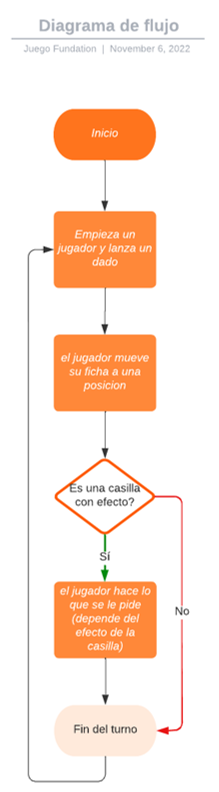
-
¿Cuál es el conflicto en mi juego?
-
Poder ayudar a más animales por medio de fundaciones, adopciones, entre otras cosas.
-
¿Cuáles son las reglas y procedimientos?
-
Cada jugador escoge un color de ficha (negro, rojo, azul, amarrillo, naranja) y $5000 (10 billetes
de 100, 6 billetes de 500, 1 billete de 1000).
Se posicionan las fichas de todos los jugadores en el inicio del tablero.
Para escoger la persona que va a ser la que inicie el juego se debe tirar un dado al azar y el que
saque mayor es el que inicia, y le seguirá el de la derecha.
El jugador que tiene el turno debe tirar los dados y avanzar ese número de posiciones.
Casilla de escoger carta: Si cae en una casilla de “Escoge una carta” el jugador debe coger una
carta del fajo que le dirá que le sucedió.
Casillas situacionales: Las casillas pueden tener estados o situaciones que también pueden ser algo
malo o bueno dependiendo de la casilla.
Casillas de fundación: Las casillas pueden tener el nombre de una fundación y el jugador puede crear
su fundación en ese lugar o puede donar a la fundación si desea, acumulando puntos de donación. Si
la fundación es de algún jugador, parte del dinero se lo gana el jugador dueño.
Casilla de albergue: Puedes adoptar mascotas en las casillas de albergue. Se te permite entregar una
carta de adopción por cada mascota que adoptes y cada uno tendrá una breve descripción de la
mascota, una ventaja y desventaja que puede darte.
Suma de puntos: Se cuentan los billetes y su equivalente es en puntos, cada mascota adoptada vale
5000 puntos, cada fundación vale 10000 puntos, cada punto de donación es el doble del valor en
puntos.
-
¿Qué acciones pueden tomar los jugadores y cuando las toman?
-
El jugador puede decidir adoptar una mascota cuando cae en una casilla de albergue o recibe una
carta que le da ese permiso.
El jugador puede crear su propia fundación cuando cae en una casilla de fundación
El jugar puede donar dinero a una fundación cuando cae en una casilla de una fundación.
-
¿Hay turnos? ¿Cómo funcionan?
-
Para escoger la persona que va a ser la que inicie el juego se debe tirar un dado al azar y el que
saque mayor es el que inicia, y le seguirá el de la derecha. El jugador que tiene el turno debe
tirar los dados y avanzar ese número de posiciones. Si cae en una casilla especial entonces realiza
la acción, caso contrario, acaba su turno y le toca a la persona de la derecha lanzar los dados.
-
¿Cuántos jugadores puede haber?
-
Puede ser de 2 o 5 jugadores
- ¿Cuánto se demora en resolver el juego?
-
1-3 horas que dependerán del número de jugadores.
- ¿Cuál es el nombre (título) del proyecto? (Proyecto Espada)
-
Foundation
- ¿Cuál es la audiencia del juego?
-
Niños entre 8 a 14 años
-
Definan los objetivos de cada jugador
- ¿Qué debe hacer un jugador para ganar?
-
Para ganar un jugador debe haber llegado al final y tener la mayor cantidad de puntos posibles.
- ¿Qué debe hacer un jugador para ganar?
-
Escriban la acción más importante que un jugador puede tomar
- Describan cómo funciona
-
Puede tomar la decisión de adoptar más animales que puede darle ventajas y desventajas en las
siguientes rondas y puede crear fundaciones para ganar un poco de ellas.
- Describan cómo funciona
- Escriban las reglas y procedimientos en formato “outline” (puntos que ampliarán durante el proceso)
- Enfocarse en los procedimientos y reglas más críticos
-
Las otras reglas y procedimientos se trabajarán al avanzar
-
Los jugadores pueden interactuar cuando un jugador enemigo cae en su fundación porque si decide
donar entonces un porcentaje de esa donación va para uno.
-
Defina cuántos jugadores jugarán
- ¿Cómo interactúan los jugadores?
- No hay un número máximo de jugadores, mientras existan más es mejor. Sin embargo, sí existe un
mínimo de jugadores el cual es 4. La persona que tenga el turno activo será el acusado y el
resto son parte del jurado. El jurado requiere un mínimo de 3 personas para tratar de evitar los
“empates” en la opción seleccionada. No hay ningún tipo de trabajo en equipo, es de tipo todos
contra todos.
- ¿Cómo interactúan los jugadores?
Tercera idea
- Hunt for the murder
Juego de mesa de 3 a 5 personas. Para empezar con el juego se reparten roles; detective, perpetrador, víctima y testigo (pueden ser 1 o 2 testigos). Existen diferentes escenarios de crimen en los que los testigos resultan siendo cómplices y entorpecen el trabajo del detective que debe resolver el crimen, así como otros escenarios en los que solo se requiere de un testigo.El detective debe hacer preguntas sobre la situación a los demás para resolver el crimen planteado. Estas preguntas y respuestas vienen en las tarjetas entregadas a cada rol, estas tarjetas además contienen información personal sobre cada personaje y cierta información relevante para el escenario. Los participantes deberán conocer estos datos para responder las preguntas que les hace el detective. ¡Por supuesto que el detective no sabe quién tiene el rol de perpetrador! El objetivo del juego es que el detective resuelva el crimen en el tiempo otorgado. Existe un mapa de la ciudad y el único rol que no tendrá información sobre una cuartada será el perpetrador, es decir que sus respuestas serán inventadas (mientras que las de los demás tendrán fundamento que se podrá ver en el transcurso del juego). Las respuestas que no sean consistentes levantarán sospechas y un debido actuar del detective, que puede ser requisar al personaje y/o su hogar dentro de la ciudad (El detective cuenta con un número limitado de estas acciones-tarjetas). Los integrantes podrán dramatizar las escenas dadas en el escenario.
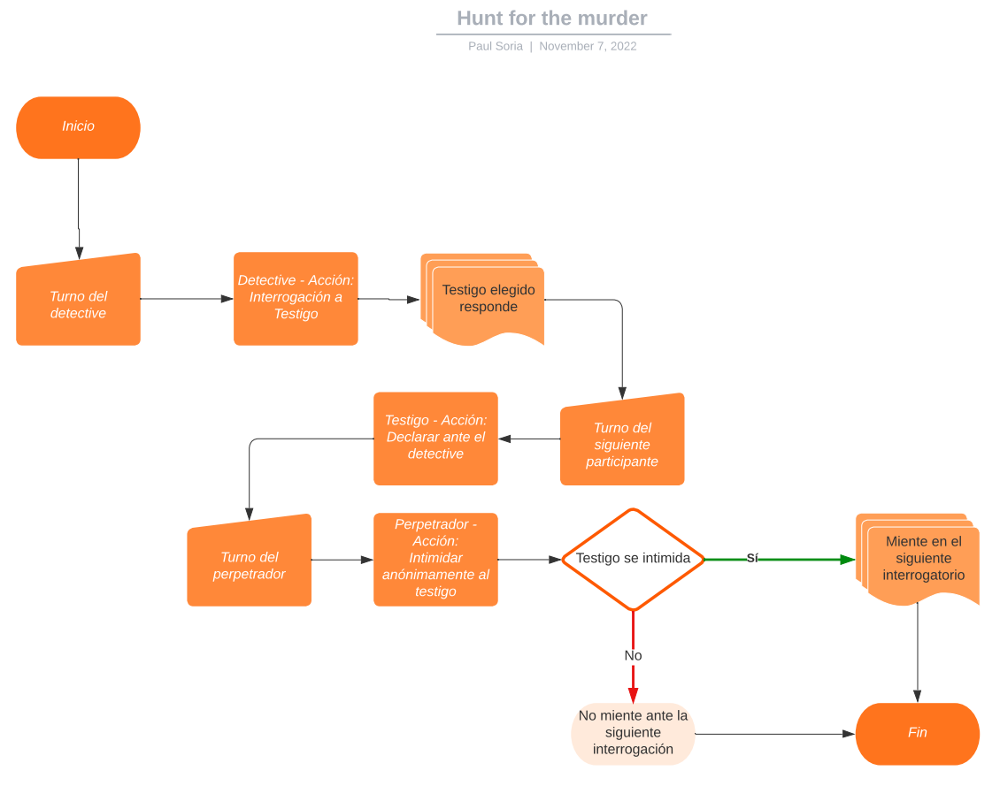
-
¿Cuál es el conflicto en mi juego?
-
Encontrar al perpetrador del crimen, no en todos los escenarios la víctima termina muriendo, pero
esta no puede identificar al culpable.
-
¿Cuáles son las reglas y procedimientos?
-
Al comienzo de cada crimen se deberá seleccionar de una caja cuál será su rol durante ese caso. El
jugador que haya escogido el rol del detective procederá a realizar preguntas al resto de
involucrados y observar los datos/armas relacionadas al crimen.
Los personajes deben seguir el rol de su juego.
Los personajes deben conocer la información de su personaje y sus respuestas deben estar acorde a
esta información.
El detective realiza requisas a los personajes y/o sus casas dentro de los hogares, esto se hace con
las cartas de los personajes; cartas como casa y cuerpo que contienen información de lo que contiene
cada uno. Esto le llevará al detective a investigar más sobre cada personaje.
-
¿Qué acciones pueden tomar los jugadores y cuando las toman?
-
El jugador puede seleccionar aleatoriamente el rol que le corresponde durante cada turno.
El jugador puede realizar preguntas de acuerdo con los datos presentados en la ronda, cada turno le
permite a cada personaje realizar una acción. Estas acciones vienen en sus tarjetas de personaje
(ocultar evidencia, interrogar, requisar, etc).
-
¿Hay turnos? ¿Cómo funcionan?
-
Existen turnos, los diferentes roles dentro del juego deben turnarse.
Durante cada turno un jugador deberá realizar una acción o simplemente pasar y no realizar ninguna.
Al empezar el juego el detective empieza y realiza una acción, luego se continúa en sentido horario,
siempre el detective es el que empieza la ronda.
-
¿Cuántos jugadores puede haber?
-
Pueden jugar entre 3 a 5 personas.
- ¿Cuánto se demora en resolver el juego?
-
Las partidas serán de rondas iterativas, estas tendrán turnos de cada jugador en el que podrán
ejecutar una acción por turno. Después de 5 turnos, el detective deberá nombrar al culpable del
acto. Esto decidirá si gana o no. Si cada ronda toma 10 minutos, el juego tendría una duración de 50
minutos por escena del crimen. Esto puede cambiar si los participantes aceleran la velocidad del
juego.
- ¿Cuál es el nombre (título) del proyecto? (Proyecto Espada)
-
Crime Scene: Hunt for the murder
- ¿Cuál es la audiencia del juego?
-
La audiencia está pensada en jóvenes mayores a 17 años.
-
Definan los objetivos de cada jugador
- ¿Qué debe hacer un jugador para ganar?
-
El equipo formado dentro de la ronda debe encontrar al culpable dentro del tiempo establecido,
los testigos deben responder con la información proporcionada por las tarjetas y el perpetrador
deberá hacer lo posible para mentir, chantajear y manipular (acciones de las tarjetas) a los
testigos en caso de ser necesario
- ¿Qué debe hacer un jugador para ganar?
-
Escriban la acción más importante que un jugador puede tomar
- Describan cómo funciona
-
El detective debe nominar al posible perpetrador, si falla, pierde la partida junto con la
víctima y testigos.
- Describan cómo funciona
- Escriban las reglas y procedimientos en formato “outline” (puntos que ampliarán durante el proceso)
-
Enfocarse en los procedimientos y reglas más críticos
- Cada rol tiene acciones que puede realizar, estas son una vez cada turno durante una ronda.
- Detective – Interrogación: El detective deberá preguntar a los participantes y/o víctima dependiendo del escenario del crimen datos sobre el suceso, estas preguntas son clave para determinar quién es el asesino/perpetrador.
- Detective – Nominar al culpable: El detective tendrá solo una oportunidad para nominar al culpable, esta decisión es crucial puesto que definirá si gana o pierde la partida.
- Detective – Requisar: El detective podrá requisar el cuerpo (del personaje) y/o el hogar del personaje usando una carta a una persona que elija, esto puede revelar pistas sobre el suceso y llevarlo a una conclusión en base a sus respuestas de las interrogaciones previas.
- Perpetrador – Chantajear: El perpetrador podrá chantajear a los testigos para que den información falsa al detective, esto se puede realizar con una carta por turno.
- Perpetrador – Mentir: El perpetrador puede mentir en un interrogatorio un número limitado de veces por cantidad de cartas, una vez por cada carta.
- Víctima – Responder: Dependiendo de la escena del crimen, la víctima puede responder preguntas al detective sobre lo que pasó durante el siniestro, estas respuestas vienen en la carta de respuesta.
- Las otras reglas y procedimientos se trabajarán al avanzar
-
Enfocarse en los procedimientos y reglas más críticos
-
Defina cuántos jugadores jugarán
- ¿Cómo interactúan los jugadores?
-
Mediante acciones por turno; cada rol tiene un turno durante una ronda. Los turnos de las rondas
se juegan en sentido horario y el detective es el primero en realizar una acción en la ronda.
Cada rol tiene acciones específicas que se pueden realizar mediante las cartas que tengan a su
disposición. Estas acciones pueden involucrar a otros jugadores o solo responder preguntas al
detective.
- ¿Cómo interactúan los jugadores?
Primera iteración
Esta etapa se trabajó con el set de cartas que inicialmente estaba conformado por preguntas que describían un contexto
y posibles respuestas de las acciones que el jugador podía tomar frente a estas situaciones.
Eran solo cartas con opciones de preguntas, que se jugaban por rondas.
Experiencia del jugador.
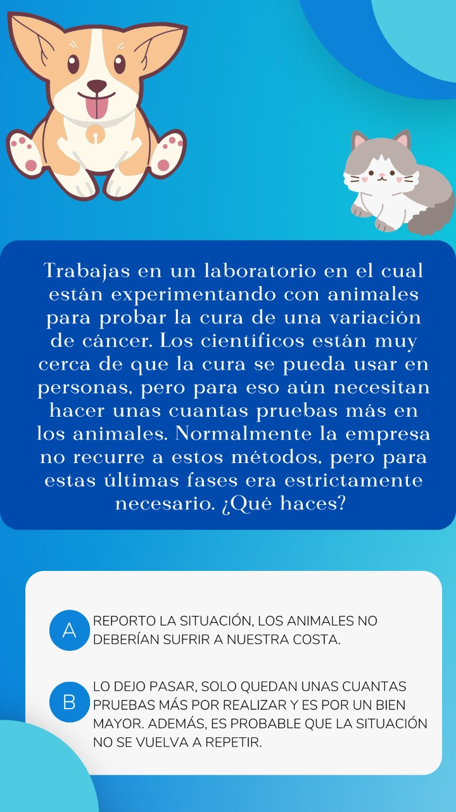
Las primeras aproximaciones al juego que tuvieron los jugadores fue algo estresante mencionaban
dado que las cartas tenían las letras en mayúscula, además de que habian ciertas preguntas que
consideraron dificiles de entender, o mal estructuradas.
Consideraban un poco aburrido el juego dado que era muy monótono.
Tomamos ciertos puntos a medir luego de realizar el testing del juego, considerando una escala del 1 al 10, siendo 10 la puntuación más alta.
- Usabilidad: 4
- Adaptabilidad: 3
- Satisfacción: 5
Segunda iteración
A partir de la retroalimentación dada por los jugadores en la primera iteración, se implementó nuevas cartas que no solo describían
situaciones, sino que ahora para lograr que el juego sea más divertido o interactivo se permitiría nuevas mecánicas
para alterar el flujo del juego y así evitar que se vuelva algo repetitivo.
Además se realizaron correcciones en el tamaño y diseño de las cartas, así mismo en la longitud de la descripción de las preguntas y respuestas.
Experiencia del jugador.
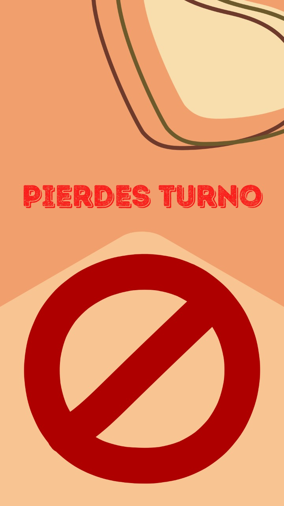
Durante el testing de esta segunda iteración se observaba que los jugadores presentaban inconformidad por la dificultad de ganar puntos,
a pesar de que se realizaban varias rondas.
Tomamos ciertos puntos a medir luego de realizar el testing del juego, considerando una escala del 1 al 10, siendo 10 la puntuación más alta.
- Usabilidad: 7
- Adaptabilidad: 6
- Satisfacción: 5
Tercera iteración
Tomando en consideración las experiencias, observaciones y opiniones de los jugadores en la segunda iteración
se llegó a la conclusión que se debía balancear el juego para darle al jugador más opciones de ganar puntos, sin quitar la lógica principal del mismo.
Para mejorar esta situación se decidió crear otra mecánica de juego que permita al jugador mejorar su puntuación a través de trivias, en donde no hay participación
de un jurado, sino que dependerá del conocimiento propio del participante.
Además de esto, se implementó una carta llamada Bonus o Lanzamiento libre, que basicamente consiste en que si el jugador saca esa carta del mazo,
deberá cumplir un reto el cual se basa en lanzar un objeto dentro de 1 de los 3 aros disponibles que poseen diferentes medidas según la puntuación
que corresponda.
Experiencia del jugador.
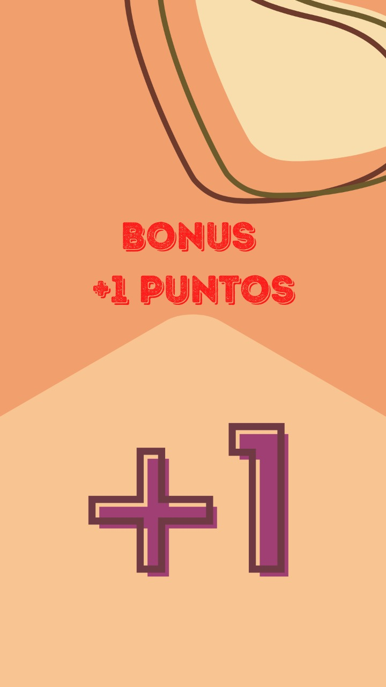 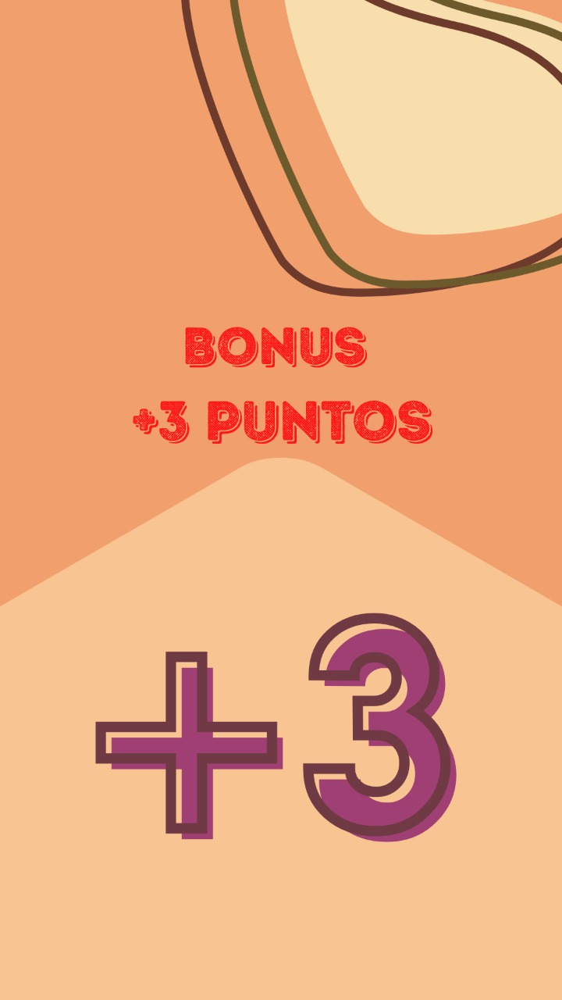
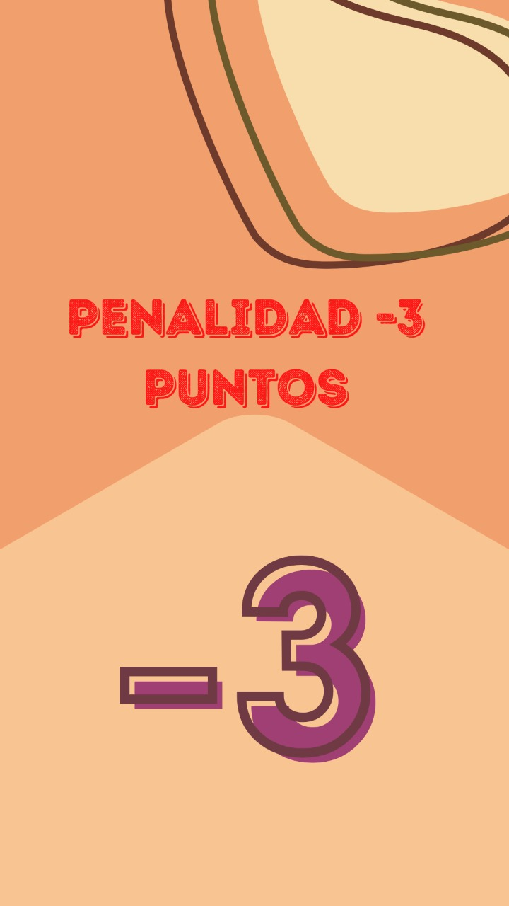
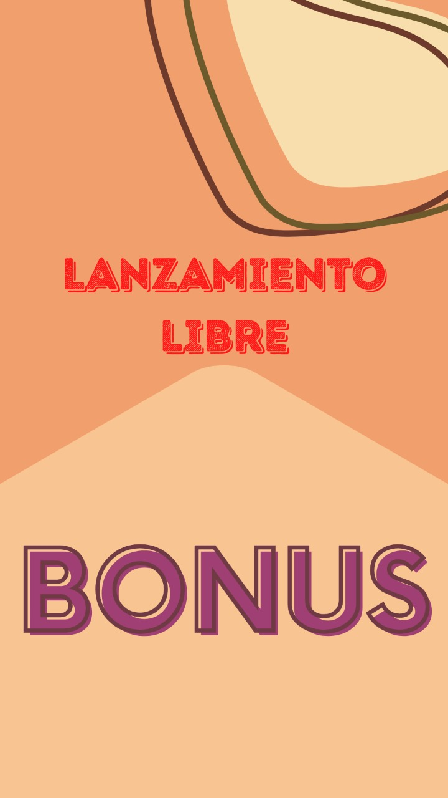
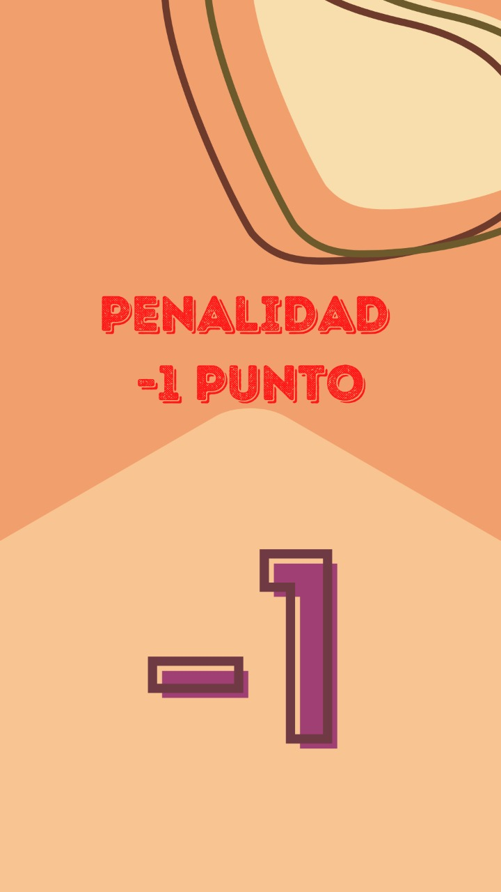
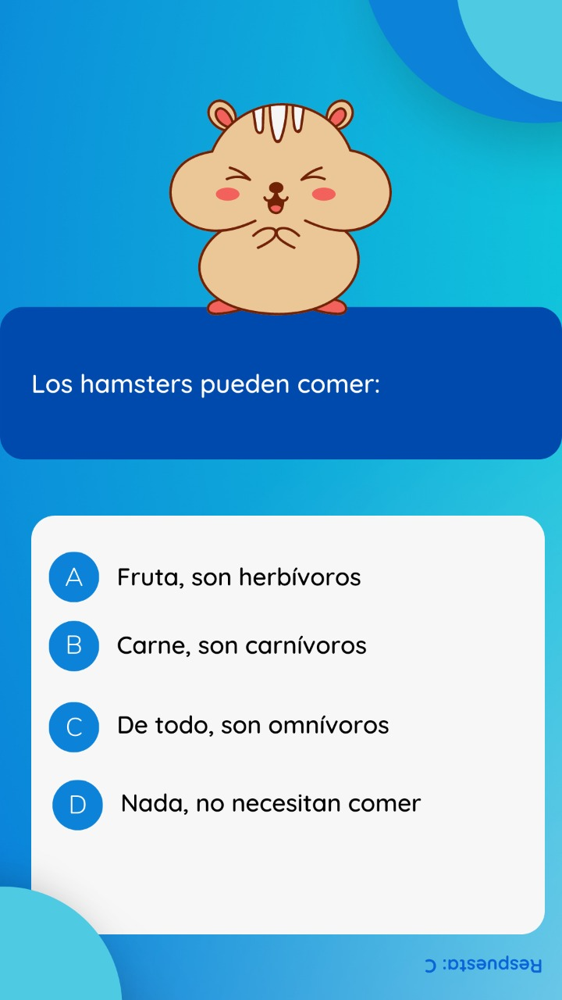
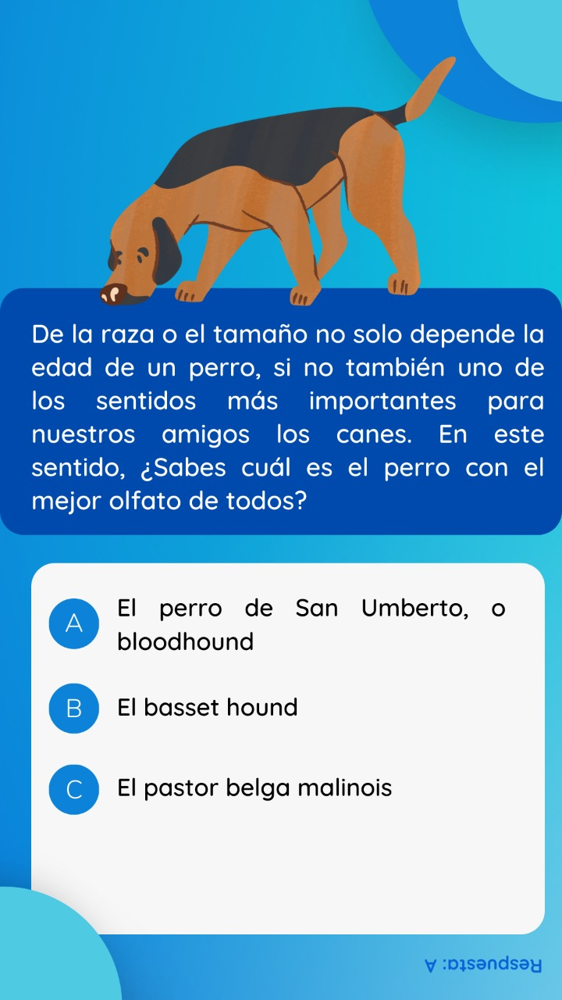
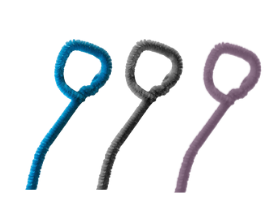
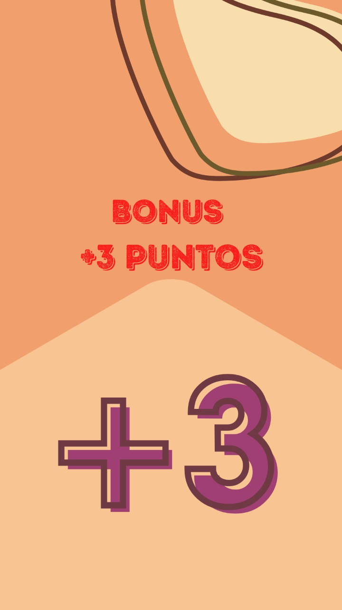
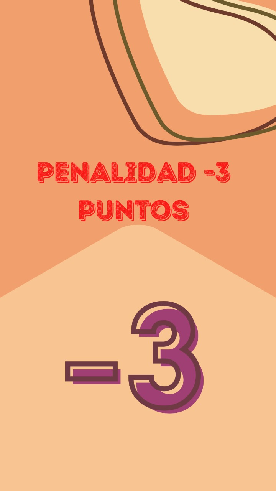
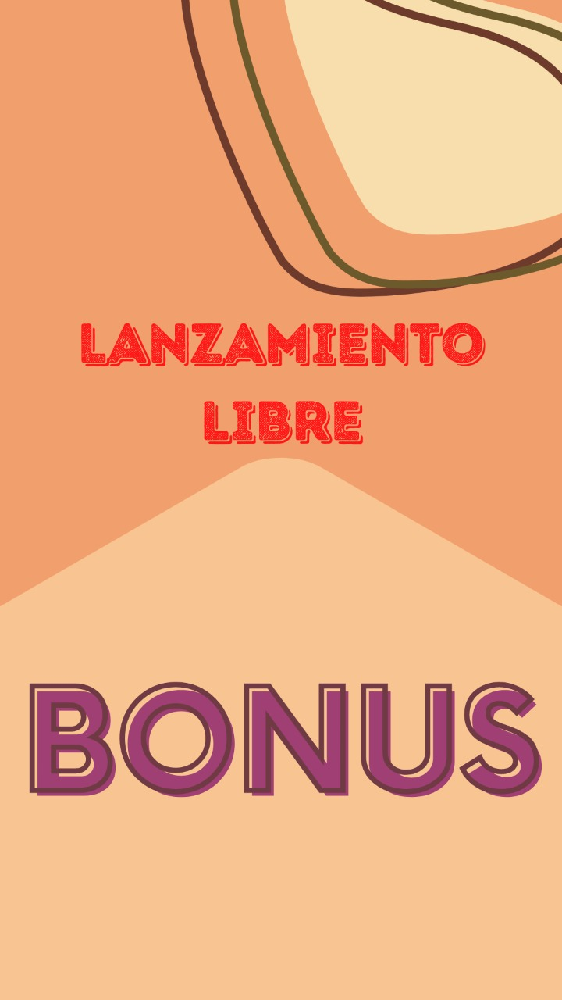
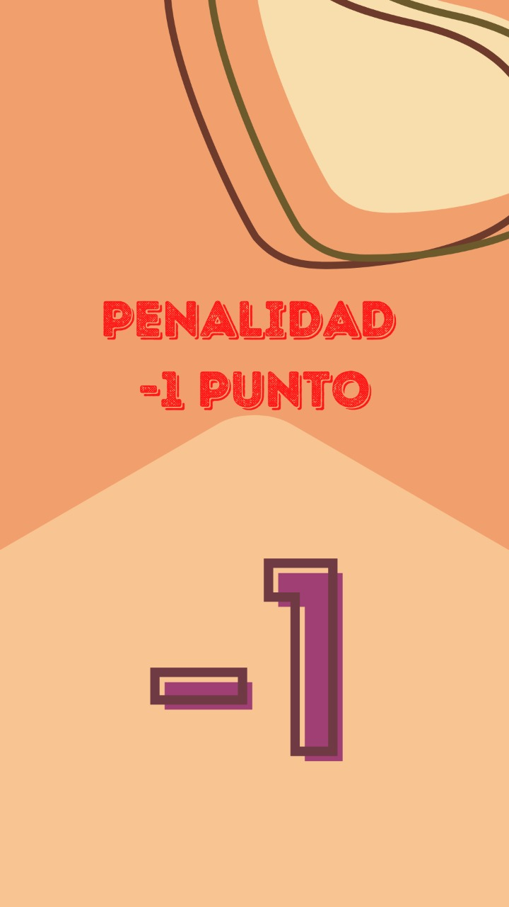
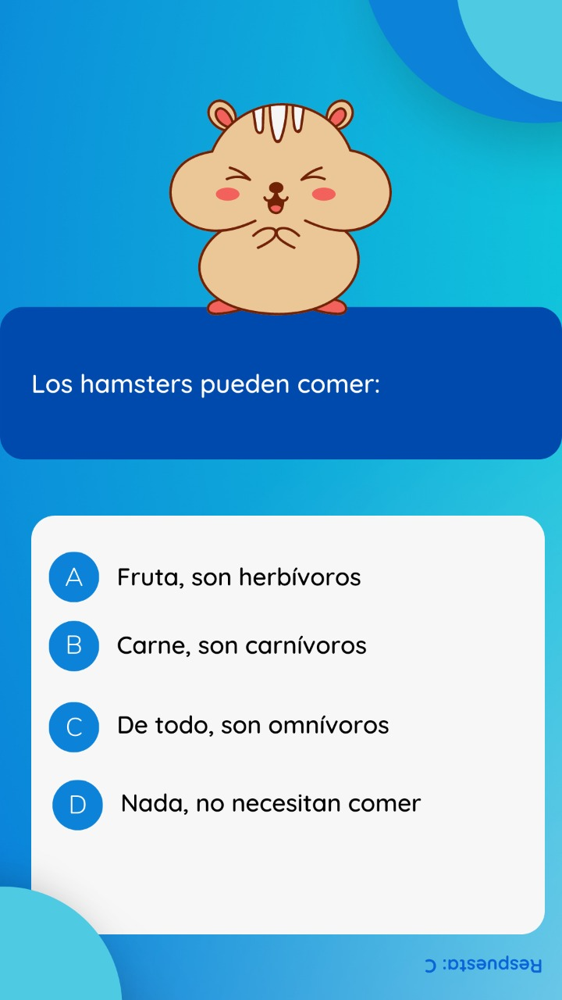
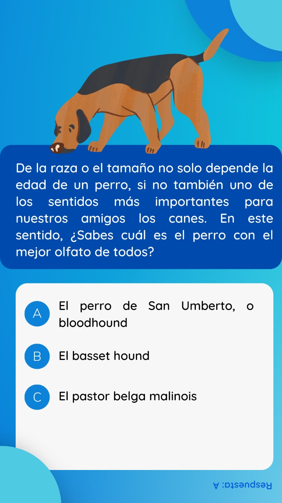
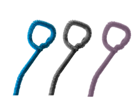
En esta iteración que por el momento es la última, se pudo observar que
el número de cartas implementadas era poco si la cantidad de jugadores aumentaba, además que el juego no soporta rondas de larga duración,
porque se vuelve predictivo.
Tomamos ciertos puntos a medir luego de realizar el testing del juego, considerando una escala del 1 al 10, siendo 10 la puntuación más alta.
- Usabilidad: 8
- Adaptabilidad: 8
- Satisfacción: 8